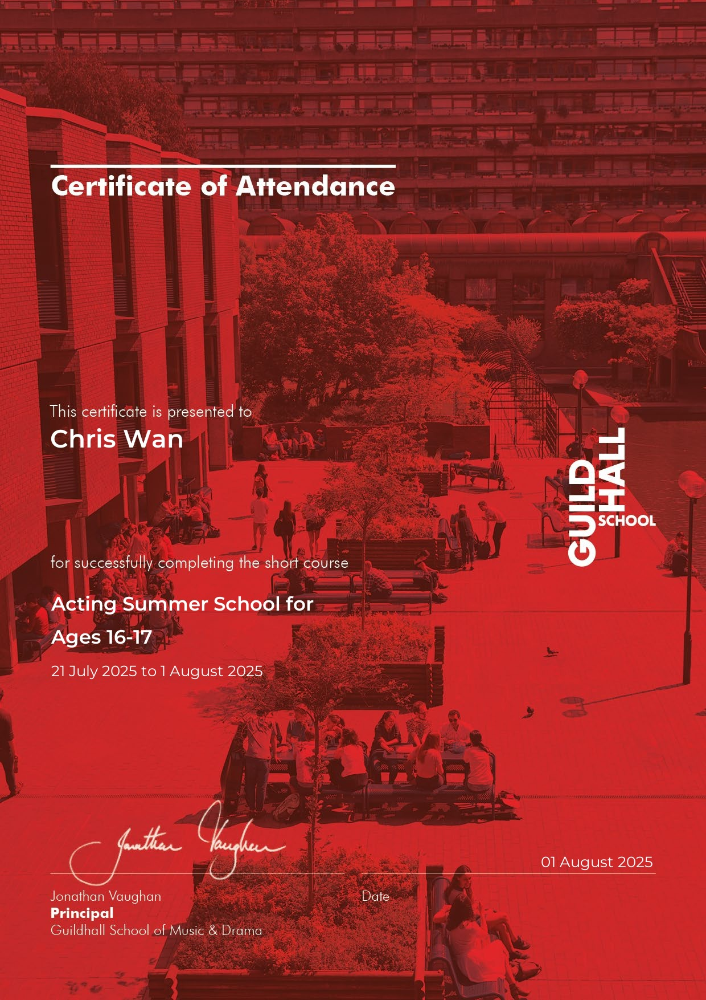
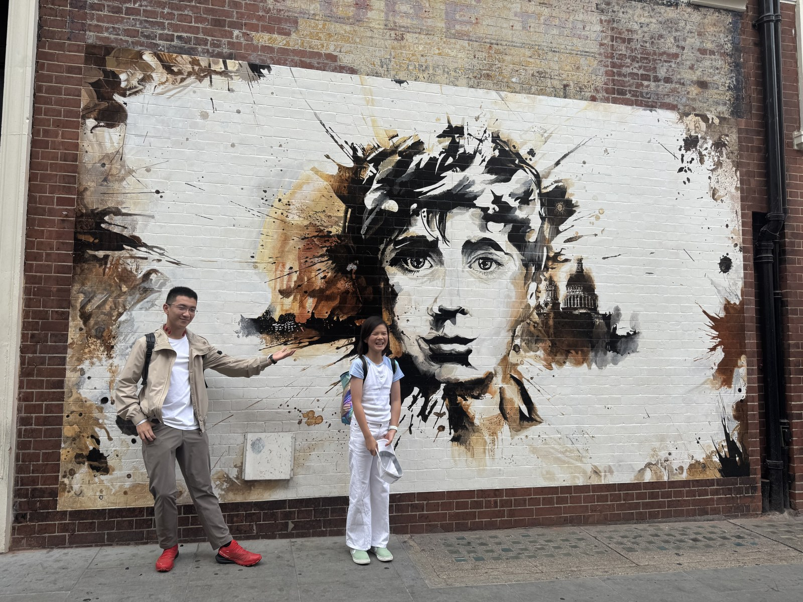
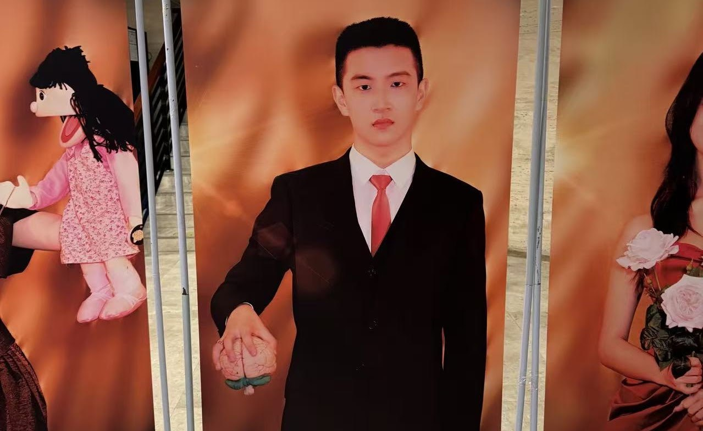

In the summer of 2025, I attended Guildhall School of Music and Drama in London, where I immersed myself in professional-level actor training. I took part in acting workshops, scene studies and group rehearsals. Beyond the studio, I wandered the city's theatre landmarks — here in front of an Oliver! street mural.

Drawing on my interest in dramatic irony and dark satire, I was cast as Patrick Bateman from American Psycho.
In London, theatre spills beyond the stage. Between rehearsals I explored the city, and one afternoon came across this large-scale street mural celebrating Oliver!, the musical drawn from Dickens's novel — a vivid reminder of how the West End's stories are painted into the city itself.
Drawing on my interest in dramatic irony and dark satire, I was cast as Patrick Bateman from American Psycho.